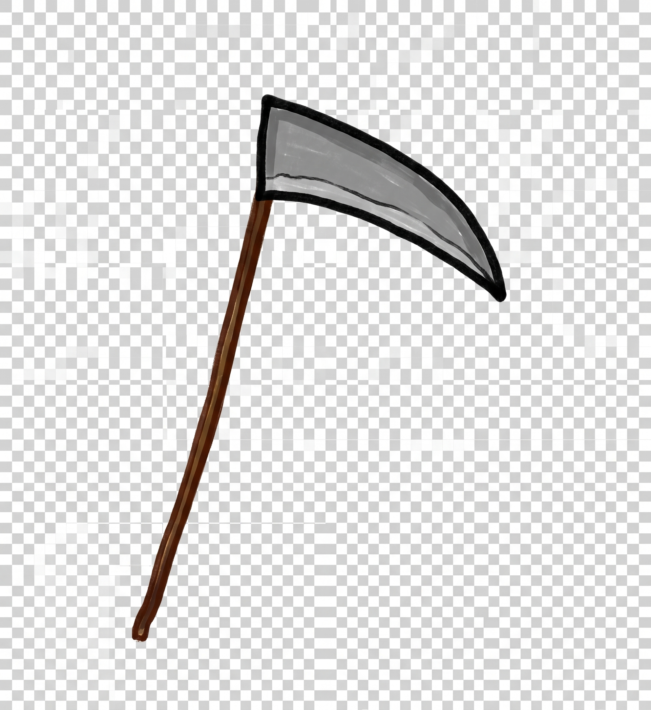
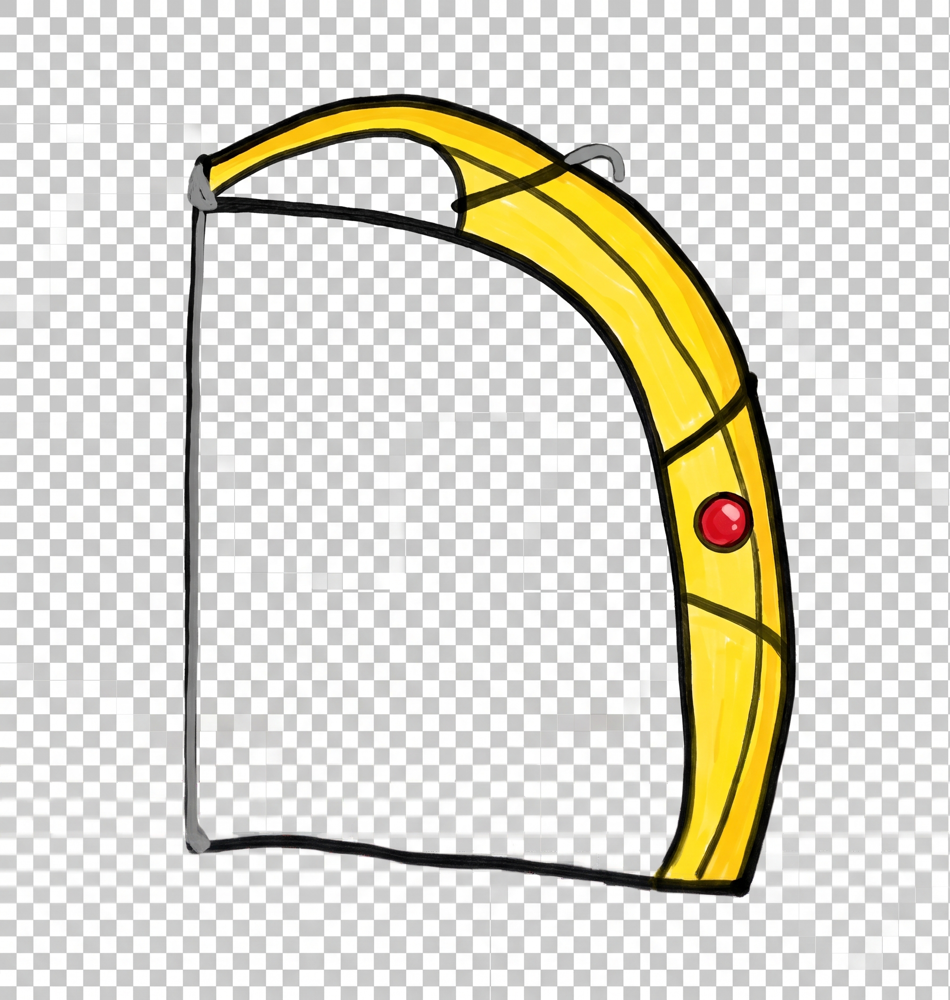
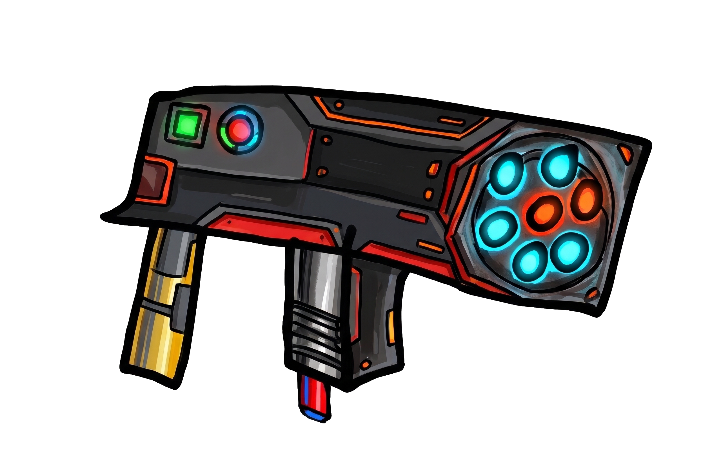
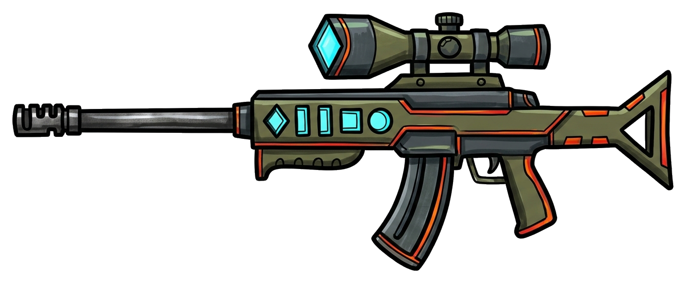
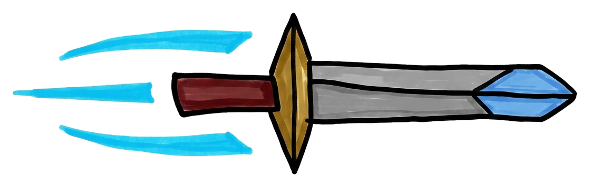
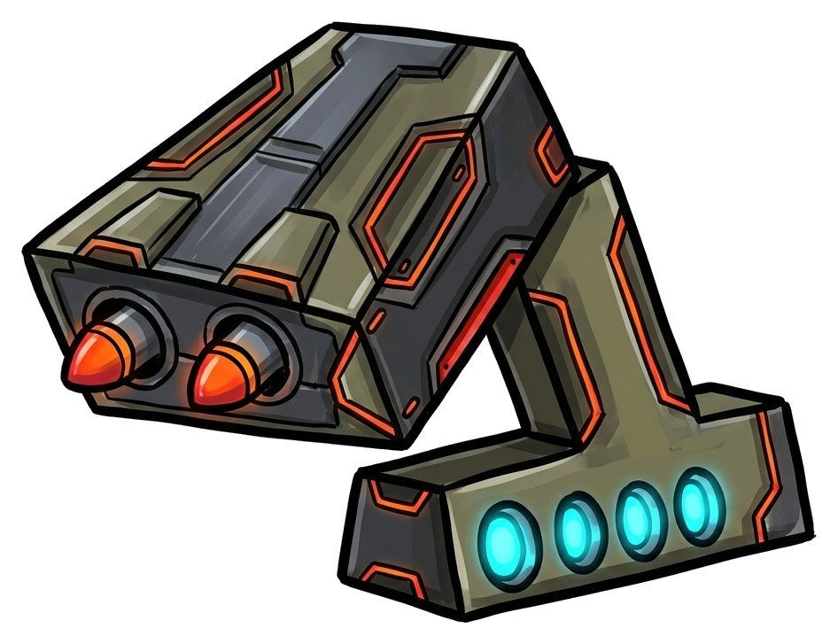
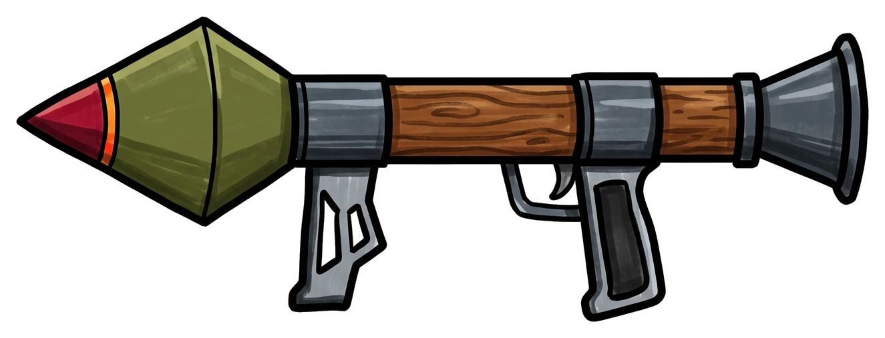
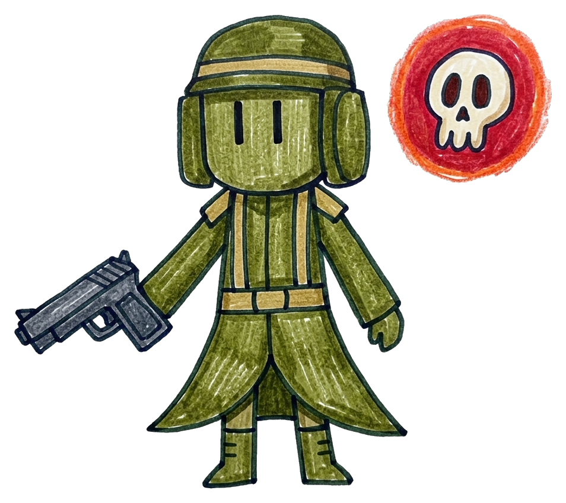
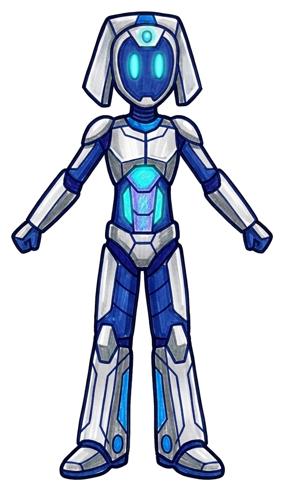
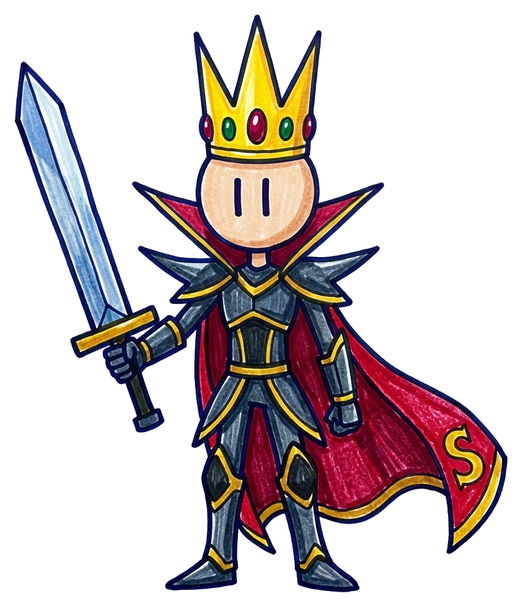

《蛋仔守城》第二版完整遊戲規則與武器／關卡設定書
最新更新版：完整收錄 12 把特色武器（新增 AWM、飛刀、RPG、愛國者飛彈車） 與 10 種怪物軍團，並同步更新「隨身補給小舖（按 B 隨時開商店）」、「失敗保留金幣」、「武器有效射程機制」、「三圍升星強化（傷害＋攻速＋射程）」與「開發者沙盒測試模式」等最新規則。
1. 最新規則與系統調整重點總覽
根據最新實作版本（`dist/game.js` 與 `assets/weapons/weapons.json`），遊戲規則與武器系統已完成以下五大升級：
🔫 1. 武器擴編至 12 把 ＋ 專屬射程機制
- 新增 4 把終極神兵：在第 3 頁商店加入 AWM 狙擊槍 ($2,800)、飛刀 ($3,500)、RPG 火箭筒 ($4,200) 與 愛國者防空飛彈機台 ($5,000)。
- 遠程武器有效射程（Range）：取消舊版全畫面無限射程，每把遠程武器現在都有專屬有效射程（`380 px ~ 700 px`），子彈飛抵射程終點會顯示末端火花，讓不同武器的交戰距離更有區別。
- 愛國者專屬載具模式：裝備「愛國者」時，主角會直接坐上大型防空飛彈戰車操控雙搖桿與雷達螢幕發射重型飛彈！
🛒 2. 隨身補給小舖 ＋ 失敗保留金幣
- 戰鬥中隨時開商店：在戰鬥中點擊右上角「🛒 商店」、點擊金幣膠囊或按快捷鍵
B，即可暫停戰局進入補給小舖，用剛打到的金幣當場買新槍或升星強化，關閉後立即返回原戰局！ - 挑戰失敗／重來保留全數金幣：即使城門耐久度歸零失敗，或從暫停選單重新開始本關，本關途中親手擊斃怪物賺到的金幣與已買裝備皆 100% 保留，可先強化武器再重新挑戰，絕不卡關。
- 分頁式瀏覽：商店（12 把武器分為 3 頁，每頁 4 把）與出戰選武畫面皆支援左右翻頁。
✨ 3. 武器升星全面提升「傷害、攻速、射程」
- 已擁有的武器可花費金幣強化至 ★2（原價 80%） 與 ★3（原價 150%）（初始拳頭則以 $150 為基準，升級費用為 $120 / $225）。
- ★2 強化幅度：攻擊力 +25%（保底 +2）、冷卻時間 ×0.90（攻速變快）、判定範圍／爆破半徑 +12%、遠程射程 +8%。
- ★3 強化幅度：攻擊力 +55%（保底 +5）、冷卻時間 ×0.80（攻速提升 25%）、判定範圍／爆破半徑 +25%、遠程射程 +15%。
2. 核心戰鬥、城門耐久度與操作規則
結合直覺操作、城門攻防與隱藏沙盒測試功能。
🏰 城門耐久度（Castle HP）與勝負判定
- 城門基礎耐久度：每關開戰時城門固定擁有 200 HP（左上角顯示即時血條與數值）。
- 怪物破城與法術傷害：
- 怪物抵達左側城門口（
x <= 220）時，會扣除城門等同於該怪物 攻擊力（10 ~ 175） 的耐久度並消失。 - 魔法師（Mage）推進至場中央（
x <= 760）時，會詠唱 1 次遠程法術（隕石火球 30 / 魔法球 40 / 閃電 45）直接飛向城門造成傷害。
- 怪物抵達左側城門口（
- 親手擊殺才給金幣：撞門自爆的怪物不會給金幣；只有被玩家武器擊殺的怪物才會掉落金幣。
- 完美無傷守城獎金：過關時若城門維持滿血 200 / 200 HP，額外獲得本關擊殺金幣 +10% 完美守城獎金。
🎮 操作方式與 🛠️ 開發者測試模式
- 電腦鍵盤操作：
↑ ↓ ← →：在草地可玩範圍（x: 235~1380, y: 295~790）內移動。- 按住
Space：依目前武器攻速朝右側連續攻擊。 Q（或點擊下方武器欄）：即時循環切換已擁有的武器。B（或點右上角「🛒 商店」）：隨時開啟／關閉隨身補給小舖。Esc：暫停遊戲（若在隨身商店中按 Esc 則返回戰場）。
- 手機／平板觸控操作：左下虛擬搖桿移動、右下大型按鈕按住連續攻擊、下方武器卡點擊切換武器、右上角按鈕開商店。
- 🛠️ 隱藏開發者測試模式（Sandbox Mode）：
- 啟動方式：連續點擊左上角「蛋」字標誌、標題或關卡標籤 7 次。
- 功能：立即解鎖全部 12 把武器（可一鍵切換全武器 ★1 / ★2 / ★3）、獲得 $99,999 金幣、開啟「🔒 沙盒無敵（城門不扣血、停止自動波次）」、一鍵清空怪物，並可任意點擊召喚 10 種怪物（×1 / ×3 / ×5 隻）上場測試火力！
3. 全 12 把武器完整數值與升星成長表
商店分為 3 個分頁（每頁 4 把武器）。下表完整列出每把武器的 ★1 基礎數值、★2 與 ★3 強化後數值、有效射程與特殊機制。
| 編號 / 分頁 | 武器名稱與圖示 | 攻擊類型 | 購買價格 ★2 / ★3 強化費 |
單發攻擊力 ★1 → ★2 → ★3 |
攻擊間隔 (攻速) ★1 → ★2 → ★3 |
單目標 DPS ★1 → ★2 → ★3 |
有效射程 / 範圍 ★1 → ★2 → ★3 |
戰術定位與特殊視覺／擊退效果 |
|---|---|---|---|---|---|---|---|---|
| 0第 1 頁 |
✊
拳頭初始免費配備
|
近戰群攻 | 免費 ($0)$120 / $225 | 77 → 9 → 12 | 0.50s (2.0/秒)0.50 → 0.45 → 0.40s | 14.014.0 → 20.0 → 30.0 | 射程 170 px170 → 190 → 213 px 垂直 ±105~131 px |
近戰扇形群攻，出拳時帶有拳套衝擊視覺，可同時毆打前方重疊的殭屍群。 |
| 1第 1 頁 |
 鐮刀Scythe
|
近戰群攻 | $50$40 / $75 | 88 → 10 → 13 | 0.45s (2.2/秒)0.45 → 0.41 → 0.36s | 17.817.8 → 24.4 → 36.1 | 射程 220 px220 → 246 → 275 px 垂直 ±120~150 px |
大範圍近戰橫掃，第 1 關打倒 5 隻殭屍即可隨時按 B 購買，輕鬆橫掃早期屍潮。 |
| 2第 1 頁 |

長刀Longsword
|
近戰群攻 | $100$80 / $150 | 99 → 11 → 14 | 0.38s (2.6/秒)0.38 → 0.34 → 0.30s | 23.723.7 → 32.4 → 46.7 | 射程 255 px255 → 286 → 319 px 垂直 ±125~156 px |
高速長距斬擊，揮砍速度與距離兼具的近戰主力，適合第 1~2 關快速清場。 |
| 3第 1 頁 |
 弓Bow
|
遠程穿透 | $250$200 / $375 | 88 → 10 → 13 | 0.40s (2.5/秒)0.40 → 0.36 → 0.32s | 20.020.0 → 27.8 → 40.6 | 射程 420 px420 → 454 → 483 px 穿透寬 ±58~73 px |
入門中距離直線穿透武器，能安全在怪群前方維持中距離直線貫穿輸出。 |
| 4第 2 頁 |

M1911半自動手槍
|
遠程穿透 | $550$440 / $825 | 1010 → 13 → 16 | 0.30s (3.3/秒)0.30 → 0.27 → 0.24s | 33.333.3 → 48.1 → 66.7 | 射程 380 px380 → 410 → 437 px 穿透寬 ±62~78 px |
中近距離半自動快速穿透手槍，射速輕快，2 槍解決殭屍、6 槍解決小戰士。 |
| 5第 2 頁 |

GL06榴彈發射器
|
範圍爆破 | $900$720 / $1,350 | 2020 → 25 → 31 | 1.00s (1.0/秒)1.00 → 0.90 → 0.80s | 20.0 單體20.0 → 27.8 → 38.8 (高群傷控場) |
射程 460 px460 → 497 → 529 px 爆破半徑 190~238 px |
中距離榴彈範圍爆破，命中目標產生圓形大爆炸，對範圍內所有敵人造成傷害並附帶 0.45 秒減速與擊退。 |
| 6第 2 頁 |

AK-47突擊步槍
|
連射穿透 | $1,500$1,200 / $2,250 | 1515 → 19 → 23 | 0.22s (4.5/秒)0.22 → 0.20 → 0.18s | 68.268.2 → 95.0 → 127.8 | 射程 520 px520 → 562 → 598 px 穿透寬 ±65~81 px |
中遠距離全自動連射穿透步槍，擁有 520 px 優秀射程與高射速，中期對付法師與惡魔靈的主力。 |
| 7第 2 頁 |
 M134六管火神機槍
|
極速彈幕 | $2,000$1,600 / $3,000 | 2525 → 31 → 39 | 0.14s (7.1/秒)0.14 → 0.13 → 0.11s | 178.6178.6 → 238.5 → 354.5 | 射程 480 px480 → 518 → 552 px 穿透寬 ±78~98 px |
中距離終極火神彈幕穿透，每秒傾瀉 7~9 發重機槍彈，寬幅彈道能瞬間融化整排精英怪。 |
| 8第 3 頁 |
 AWM重型狙擊步槍
|
遠程狙擊擊退 | $2,800$2,240 / $4,200 | 7575 → 94 → 116 | 0.36s (2.8/秒)0.36 → 0.32 → 0.29s | 208.3208.3 → 293.8 → 400.0 | 射程 700 px700 → 756 → 805 px 穿透寬 ±82~103 px |
全遊戲最遠射程（700~805 px）！藍色高能狙擊彈道，每發命中附帶 26 px 強效擊退，專克遠處施法的魔法師與死神。 |
| 9第 3 頁 |
 飛刀Throwing Knife
|
高速連擲穿透 | $3,500$2,800 / $5,250 | 6060 → 75 → 93 | 0.22s (4.5/秒)0.22 → 0.20 → 0.18s | 272.7272.7 → 375.0 → 516.7 | 射程 400 px400 → 432 → 460 px 穿透寬 ±86~108 px |
中近距離疾風連擲武器，發射實體飛刀圖像＋青藍風痕特效，擁有全遊戲最高的單體穿透 DPS（★3 高達 516.7 DPS）！ |
| 10第 3 頁 |
 愛國者防空飛彈機台
|
載具巨型轟炸 | $5,000$4,000 / $7,500 | 160160 → 200 → 248 | 0.52s (1.9/秒)0.52 → 0.47 → 0.42s | 307.7 單體307.7 → 425.5 → 590.5 (毀滅級範圍轟炸) |
射程 620 px620 → 670 → 713 px 爆破半徑 270~338 px |
專屬搭乘大型防空飛彈機台載具模式！主角坐上裝甲座椅操控雙搖桿發射重型飛彈，造成半徑 270~338 px 毀滅性大範圍轟炸＋減速震退。 |
| 11第 3 頁 |
 RPG重型火箭筒
|
重型高爆火箭 | $4,200$3,360 / $6,300 | 115115 → 144 → 178 | 0.48s (2.1/秒)0.48 → 0.43 → 0.38s | 239.6 單體239.6 → 334.9 → 468.4 (大範圍高爆) |
射程 560 px560 → 605 → 644 px 爆破半徑 230~288 px |
中遠程重型火箭筒，單發高爆 115~178 傷害，命中產生半徑 230~288 px 大範圍爆炸並附帶 0.45 秒減速與擊退。 |
4. 全 10 種怪物圖鑑與行為機制表
依據 10 種怪物的造型與背景設定，區分出基礎雜兵、高速突擊、遠程施法、高傷精英、重裝副首領與終極魔王。
| ID | 怪物名稱與造型 | 定位分類 | HP (血量) | 破城攻擊力 | 擊敗金幣 | 走完全程時間 | 移動速度 | 初次登場與特殊行為機制 |
|---|---|---|---|---|---|---|---|---|
monster_01 |
方塊殭屍
Square Zombie |
基礎雜兵 | 20 | 10 | $10 | 13.5 秒 | ~96 px/s | 第 1 關登場：直線朝城門緩步前進，數量龐大但血量低，用於熟悉走位與群攻。 |
monster_02 |

冠帽小戰士
Little Knight |
前鋒步兵 | 60 | 20 | $50 | 12.5 秒 | ~104 px/s | 第 2 關登場：血量為殭屍的 3 倍，步伐稍快，帶領殭屍群推進的小隊長。 |
monster_03 |

裝甲騎兵
Armored Cavalry |
高速突擊 | 100 | 25 | $80 | 10.0 秒 | ~130 px/s | 第 3 關登場：騎乘裝甲猛獸，移動速度比殭屍快 35%！玩家需優先攔截避免衝破防線。 |
monster_04 |

忍者
Ninja |
極速刺客 | 150 | 35 | $120 | 9.0 秒 | ~145 px/s | 第 4 關登場：全遊戲移動最快的敏捷單位（9 秒即達城門），行進時帶有上下正弦波閃避軌跡（agile: true）。 |
monster_05 |
魔法師
Mage |
遠程施法 | 195 | 40 (30 / 40 / 45) |
$160 | 15.0 秒 | ~87 px/s | 第 5 關登場：推進至場中央（x <= 760）若未死亡，會詠唱 1 次隨機法術（隕石火球 30 / 魔法球 40 / 閃電 45）遠距轟擊城門！ |
monster_06 |
惡魔靈
Demon Spirit |
靈體中堅 | 250 | 50 | $200 | 11.5 秒 | ~113 px/s | 第 5 關登場：上下飄浮前進的魔眼幽靈（float: true），血量厚且速度不慢，常掩護魔法師推進。 |
monster_07 |

死神
Grim Reaper |
高傷精英 | 300 | 75 | $250 | 12.5 秒 | ~104 px/s | 第 6 關登場：手持巨型鐮刀的死神，單次破城傷害高達 75（漏掉 3 隻即直接破城）。 |
monster_08 |
 手槍兵
Pistol Soldier |
重裝精英 | 500 | 125 | $400 | 15.5 秒 | ~84 px/s | 第 7 關登場：500 HP 的重裝骷髏光環槍兵，需要高 DPS 武器（M134、AWM、飛刀、RPG）快速擊破。 |
monster_09 |
 AI-Gemini
科技機甲副首領 |
副首領 (Sub-Boss) | 750 | 150 | $600 | 18.0 秒 | ~72 px/s | 第 7 關壓軸登場：750 HP 高科技機甲（紫色首領血條），受擊退效果減免，破城傷害高達 150。 |
monster_10 |
 刀之首領
Blade Boss |
終極魔王 (Final Boss) | 1,000 | 175 | $800 | 21.0 秒 | ~62 px/s | 第 8 關最終魔王：高達 1,000 HP 與 175 破城傷害，體型最大，適合以愛國者、RPG、飛刀或 M134 全力集火。 |
5. 全 8 關主線戰役：詳細關卡配置與 12 把武器採購路線圖
結合「戰鬥中可隨時按 B 開商店」的新規則，玩家在關卡途中賺夠金幣即可立即買新武器上場，下表呈現第 1 至第 8 關的完整配置。
初陣・草地上的方塊屍潮
👾 怪物陣容與配置
純方塊殭屍教學關，總血量 360 HP。
⚔️ 推薦武器與商店目標
開局出戰：✊ 拳頭
途中／過關可買：打滿 $50 可立即按 B 買 鐮刀 ($50)，或滿 $100 買 長刀 ($100)！
💡 設計師節奏說明
因為現在支援戰鬥中隨時開商店，玩家擊殺第 5 隻殭屍（賺到 $50）就能當場買鐮刀換上，立刻體驗武器升級的爽快感！
皇冠小隊長的進擊
👾 怪物陣容與配置
總血量 600 HP，小戰士穿插在屍潮中登場。
⚔️ 推薦武器與商店目標
推薦出戰：🗡️ 長刀 或 鐮刀
途中／過關可買：弓 ($250) 或存錢直上 M1911 手槍 ($550)
💡 設計師節奏說明
由近戰轉入遠程的關鍵過渡關。購入「弓」或「M1911」後即可在安全距離直線穿透多隻排隊的殭屍與小戰士。
鐵蹄奔襲・裝甲騎兵突擊
👾 怪物陣容與配置
總血量 1,080 HP，裝甲騎兵 10 秒即衝達城門。
⚔️ 推薦武器與商店目標
推薦出戰：🏹 弓 ★2 或 🔫 M1911
途中／過關可買：GL06 榴彈發射器 ($900)
💡 設計師節奏說明
裝甲騎兵衝刺速度快，換上 M1911 或購入 GL06 利用範圍爆炸＋減速震退，能有效壓制騎兵衝鋒。
疾風暗影・忍者的奇襲
👾 怪物陣容與配置
總血量 1,750 HP，忍者僅需 9 秒且會波浪閃避！
⚔️ 推薦武器與商店目標
推薦出戰：🔫 M1911 ★2 或 💥 GL06
途中／過關可買：AK-47 ($1,500) 或 M134 ($2,000)
💡 設計師節奏說明
面對波浪走位的 9 秒極速忍者，高射速的 AK-47 或大範圍爆炸的 GL06 能大幅提高命中容錯率。
秘法與魔眼・雙重威脅
👾 怪物陣容與配置
總血量 3,360 HP，魔法師走到中場會遠程施法轟門。
⚔️ 推薦武器與商店目標
推薦出戰：🔥 AK-47 或 ⚡ M134
途中／過關可買：第 3 頁神兵 AWM 狙擊槍 ($2,800) 或 飛刀 ($3,500)
💡 設計師節奏說明
魔法師在 x <= 760 就會詠唱法術轟擊城門！若購入射程高達 700 px 的 AWM 狙擊槍，就能在魔法師詠唱前從遠端將其擊退並狙殺！
冥界收割・死神降臨
👾 怪物陣容與配置
總血量 5,030 HP，死神破城傷害高達 75 點。
⚔️ 推薦武器與商店目標
推薦出戰：🎯 AWM、🗡️ 飛刀 或 ⚡ M134
途中／過關可買：RPG 火箭筒 ($4,200) 或 愛國者飛彈車 ($5,000)
💡 設計師節奏說明
第 6 關進帳高達 $2,950，讓玩家正式邁入「第 3 頁終極神兵」階段，可購入飛刀、RPG 或直上 $5,000 的愛國者防空飛彈機台！
鋼鐵與硝煙・AI-Gemini 覺醒（副首領關）
👾 怪物陣容與配置
總血量 7,880 HP，中場與關底各出現 1 尊 AI-Gemini 機甲。
⚔️ 推薦武器與商店目標
推薦出戰：🚀 愛國者、💥 RPG 或 🗡️ 飛刀
途中／過關可買：將主力終極武器升至 ★2 / ★3 滿級強化
💡 設計師節奏說明
500 HP 的手槍兵搭配 750 HP 的 AI-Gemini 機甲，正好讓玩家發揮「愛國者 ($5,000)」或「RPG ($4,200)」的巨型爆破威力，並將高階武器升星強化！
王座的終極試煉・刀之首領降臨
👾 怪物陣容與配置
總血量 9,750 HP！中場與關底皆有「AI-Gemini + 刀之首領」聯手壓境！
⚔️ 終極出戰配置
推薦配置：🚀 愛國者 ★3（範圍轟炸控場）＋ 🗡️ 飛刀 ★3 或 🎯 AWM ★3（按 Q 切換點殺首領）
💡 設計師節奏說明
新增的 4 把高階武器（AWM、飛刀、RPG、愛國者）讓後期累積的上萬金幣有了最華麗的發揮空間，玩家可以開著愛國者飛彈車轟炸全場，完成最終決戰！
6. 八關卡全局曲線總表（DPS 需求 vs 12 武器經濟對照）
以下總表呈現第 1 關至第 8 關的總血量、平均 DPS 門檻，以及對應金幣可解鎖與升星的 12 把武器進度。
| 關卡 | 新登場怪物 | 怪物總數 | 生怪間隔 | 關卡總 HP | 預估時長 | 最低平均 DPS | 主力推薦武器 (★1 ~ ★3 DPS) | 本關金幣 | 累積總金幣 (無傷可再+10%) |
|---|---|---|---|---|---|---|---|---|---|
| 第 1 關 | 方塊殭屍 | 18 隻 | 2.40 秒 | 360 | ~50 秒 | 7.2 / 秒 | 拳頭 (14.0) → 途中買鐮刀 (17.8) / 長刀 (23.7) | $180 | $180 |
| 第 2 關 | 冠帽小戰士 | 22 隻 | 2.10 秒 | 600 | ~55 秒 | 10.9 / 秒 | 長刀 (23.7) / 弓 (20.0 遠程) | $380 | $560 |
| 第 3 關 | 裝甲騎兵 | 24 隻 | 1.90 秒 | 1,080 | ~55 秒 | 19.6 / 秒 | M1911 (33.3) / GL06 (爆破控場) | $690 | $1,250 |
| 第 4 關 | 忍者 | 25 隻 | 1.80 秒 | 1,750 | ~55 秒 | 31.8 / 秒 | M1911 ★2 (48.1) / AK-47 (68.2) | $1,160 | $2,410 |
| 第 5 關 | 魔法師、惡魔靈 | 26 隻 | 1.75 秒 | 3,360 | ~60 秒 | 56.0 / 秒 | AK-47 (68.2) / M134 (178.6) / AWM (208.3) | $1,990 | $4,400 |
| 第 6 關 | 死神 | 26 隻 | 1.70 秒 | 5,030 | ~60 秒 | 83.8 / 秒 | AWM (208.3) / 飛刀 (272.7) / RPG (239.6 爆破) | $2,950 | $7,350 |
| 第 7 關 | 手槍兵、AI-Gemini | 25 隻 | 1.65 秒 | 7,880 | ~65 秒 | 121.2 / 秒 | 愛國者 (307.7 巨型轟炸) / 飛刀 ★2 (375.0) | $4,590 | $11,940 |
| 第 8 關 | 刀之首領 | 28 隻 | 1.60 秒 | 9,750 | ~75 秒 | 130.0 / 秒 | 愛國者 ★3 (590.5 轟炸) + 飛刀 ★3 (516.7) | $5,700 | $17,640 |